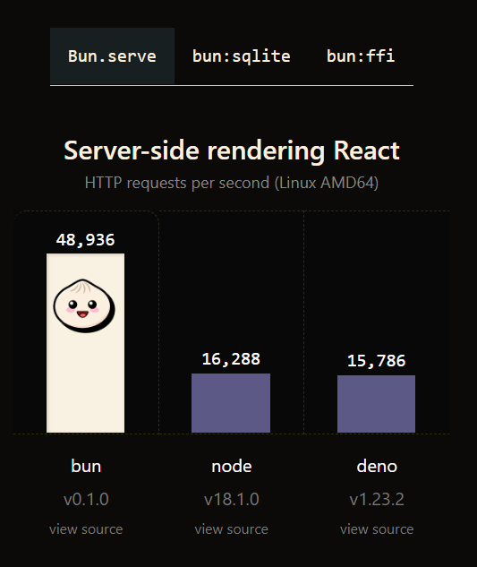

Bun, el asesino de Node.js (11/07/2022) - Post discontinued
Este mes por fin se ha lanzado la versión Beta de Bun, pero que es Bun?
1. Que es Bun?
Bun es un runtime de JavaScript, no un runtime de JavaScript si no el mas rapido, siendo 3 veces mas rapido que el famoso Node.js, además, puede remplazar herramientas como webpack. 
2. Por qué PHP no es malo?
Cada uno tiene sus gustos, el problema es que hay gente que sin probar PHP dice que es malo y se niega a cambiar su opinión y ni siquiera dan argumentos.
En mi opinión PHP es el mejor lenguaje en cuanto a todo del backend y te dire por qué:
1. Empieza un servidor web con una sola línea, php -S 0.0.0.0:8080 -t .
2. Es muy facil de usar y una sintaxis basada en C.
3. No tendras que usar un file system o renderer para mostrar cada archivo.
3. Mi opinión
Yo opino que el mejor lenguaje backend es PHP, aparte es un lenguaje que aprecio ya que fue el primer lenguaje que aprendí. Cada uno tiene sus gustos, no digo que la gente tenga que gustarle PHP, pero todos tienen que estar de acuerdo en que no esta muerto, porque probablemente si dices que esta muerto seas alguien con poca atención.